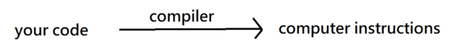
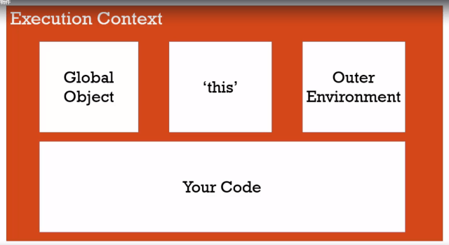
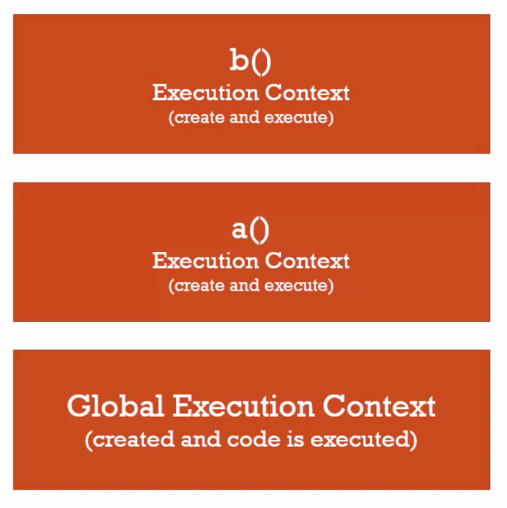
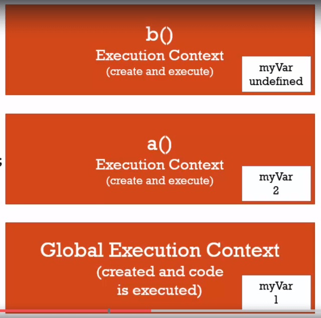
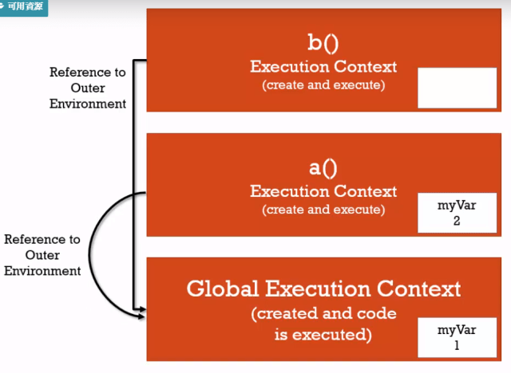
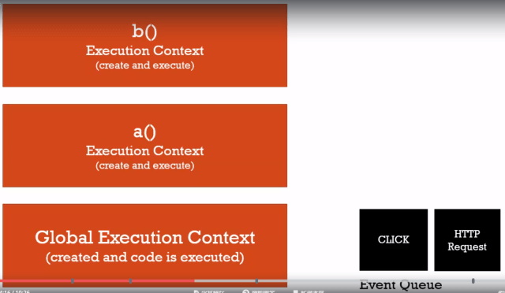

SYNTAX PARSER(語法解析器)
a program that reads your code and determines that it does and if its grammar is valid
一個程式，能夠讀取程式碼並決定做何動作，如果你的語法是有效的
Your code isn’t magic.Someone else wrote a program to translate it for the computer.

你的程式碼(人類看得懂)經過編譯器變成電腦看得懂的指令
LEXICAL ENVIRONMENT(詞彙環境)
where something sits physically in the code you write
‘Lexical’ means ‘having to do with words or grammar’. A lexical environment exists in programming languages in which where you write something is important.
主要討論：程式碼被寫在哪裡？他的周圍環境是甚麼？
EXECUTION CONTEXT(執行環境)
a wrapper to help manage the code that is running
一個包裹，幫助管理正在執行的程式
There are lots of lexicak environments. Which one is currently running is managed via execution contexts. It can contain things beyond what you’ve wriiten in your code.
包含正在執行的程式以及正在被轉換的程式
Javascript執行後，執行環境建立，執行環境是在全域等級被創造的，Javascript 會自動建立兩個全域物件：window、this，沒有任何程式碼也會自動建立
全域的定義：
不在函式內的變數以及物件，他們就屬於全域

執行環境 分為兩個階段
- 創造
- 執行
創造(Hoisting)
1 | 執行環境在創造的階段，設定變數以及函數在記憶體內，這個步驟叫做提升(Hoisting) |
他並不是將程式碼移到最上面，在執行程式碼前，Javascript 已經為變數和函數在記憶體內建立一個空間了
1 | b(); // call b |
但是變數比較不一樣， Javascript 變數建立空間時並不知道他是什麼值，只知道有這個變數，直到他被執行才會知道，所以先放上 undefined 代替
1 | b(); // call b |
undefined 在 Javascript 中是一個值，不是 string
執行
Javascript 為 單執行緒 以及 同步執行
1 | function a() { |

執行順序：
1 | a() -> b() -> var e -> var c -> var d |
呼叫新函數會創造新的執行環境，並堆在執行堆的最上方，然後逐行執行，函數執行結束後，該函數的執行環境就會離開執行堆，接著繼續執行執行堆最上方的執行環境
VARIABLE ENVIRONMENT(變數環境)
變數環境只是在描述你創造變數的位置，還有他在記憶體中與其他變數的關係
變數在哪裡？
1 | funtcion b() { |

1 | funtcion b() { |

作用域內 (function) 找不到就往外部環境 (window) 尋找
Scope Chain(範圍鏈)
根據程式碼的物理位置決定外部環境
Scope
範圍是變數可以被取用的區域
1 | function a() { |
function b 的外部環境為 fuction a
1 | function b() { |
function b 的外部環境為 global
ASYNCHRONOUS(非同步)
more than one at a time
Javascript 用同步的方式處理非同步事件
當執行堆空的後才會執行事件佇列，所以這不是真的非同步，而是瀏覽器非同步的把東西放到事件佇列，但原本的程式仍然繼續一行行執行，當執行完後，執行堆空了，執行環境清除了，都結束後才會處理事件佇列
範例

1 | function waitThreeSeconds() { |
沒點擊畫面 :
結果: (3秒後)
finished function
finish execution
有點擊畫面 :
結果: (3秒後)
finished function
finish execution
click event!
結論
優先處理執行堆，結束後才處理事件佇列
- Post title：【課程紀錄】克服 JS 的奇怪部分 — 執行環境與詞彙環境
- Post author：Neil Yang
- Create time：2019-06-20 00:00:00
- Post link：https://des86532.github.io/2019/06/20/Javascript/execution-content-and-lexical-environment/
- Copyright Notice：All articles in this blog are licensed under BY-NC-SA unless stating additionally.